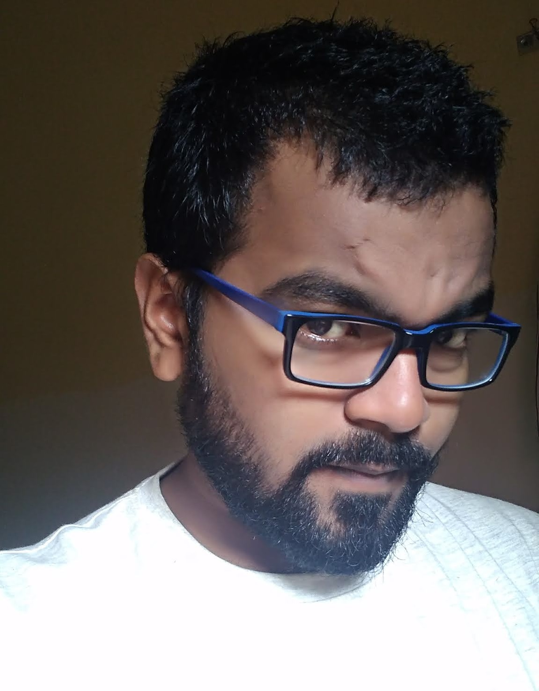

Mr. Somnath Paramanik

Ph.D. scholar;CORAL
somnathpu06@gmail.com
somnathpu06@iitkgp.ac.in
Research Area:
Hyperspectral Remote Sensing
Crop disease identification
Crop growth stages discrimination
Chlorophyll concentration estimation and Biodiversity
assessment in Bhitarkanika and Sunderbans Mangrove Forests
Google Scholar
ResearchGate
LinkedIn
About
Mr. Somnath is currently working at the Centre for Oceans, Rivers, Atmosphere and Land Sciences (CORAL), Indian Institute of Technology Kharagpur as a PhD Research scholar. His research area is application of Remote sensing and GIS in Agriculture and Forestry. His M.tech (IIT KGP, 2015-2017) was in Earth system Science and technology and B.tech (Bidhan Chandra Krishi Viswavidyalaya, 2011-2015) was in Agricultural Engineering. In his B.tech dissertation he worked on “A Computational Design of Drip Irrigation System through Optimizations for Savings of Water and Energy for Cultivation of Commercial Horticultural Crops in Indian Agro-Climatic Environment” whereas in M.tech his thesis was on “Sugarcane stages (fresh and ratoon) and yellow wheat rust disease detection using AVIRIS-NG Hyperspectral data in two test sites of Western India”
Research focuses on:
Mr. Paramanik has focused on the following research area;
- Vegetation bio-physical (Leaf area index, chlorophyll) parameter extraction from in-situ observation and satellite data (Sentinel, Landsat, MODIS etc.) products
- in-situ data collection and validation for LAI, chlorophyll, biomass, leaf spectra by relevant instruments (LAI-2200, DHP, SPAD, Spectroradiometer etc.)
- Use of Radiative Transfer Modelling (RTM) and Machine Learning to integrate in-situ data with satellite data
- Hyperspectral remote sensing for vegetation parameter characterization
- Application of microwave remote sensing in vegetation
- Productivity estimation for tropical broadleaved forests (Bhitarkanika mangrove forest, Simlipal Tiger Reserve Forest)
- Spectroscopy in crop disease (Yellow wheat rust) detection and crop growth stages discrimination
- Estimation of evapotranspiration (ET) using land surface temperature (LST) and energy balance model for agriculture field
- Customized drip irrigation system design for agricultural crops
- GUI development for hydrological cycle assessment (by Visual basic platform) and vegetation spectroscopy (by Matlab platform)
- Modelling of vegetation parameters with climatic parameters
Contribution to Projects
- Study on Chlorophyll Concentration Estimation and Plant Diversity Assessment in Bhitarkanika and Sunderbans Mangrove Forests. (Sponsored: Space Applications Centre, Indian Space Research Organization (ISRO), Ahmedabad)-
- Ground and remote sensing based measurment of LAI and estimating net primary productivity in tropical deciduous and semi-evergreen forests in India
Publications